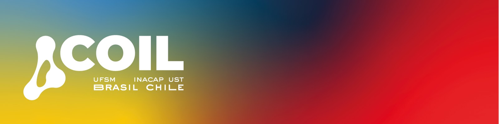

FEIRA COIL · ENCONTRO DE DOCENTES
Encontre conexões.
Um ponto de partida para novas colaborações internacionais.
1
Identifique-se
Use o e-mail informado na inscrição da Feira COIL.
2
Suas conexões internacionais
Possíveis parceiros de outro país, organizados por área.
Na sua área
Primeiro, afinidades temáticas diretas.
Explore outras áreas
Colaborações interdisciplinares também podem surpreender.